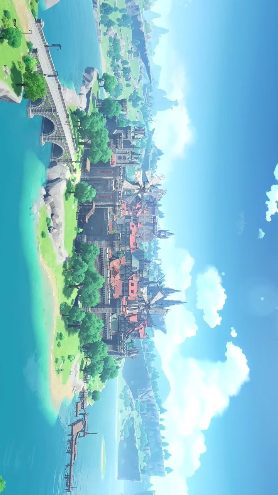

Описание
Мондштадт - регион, посвящённый элементу Анемо. Здесь царят свобода, песни и вино. Покровитель - Барбатос, известный смертным как Венти.
Ключевые факты
- Элемент: Анемо (ветер)
- Архонт: Барбатос (Венти)
- Основные фракции: Ордо Фавониус, Рыцари Ордо Бореалис
- Известные персонажи: Дилюк, Джинн, Кэйа, Лиза
Вернуться к списку регионов